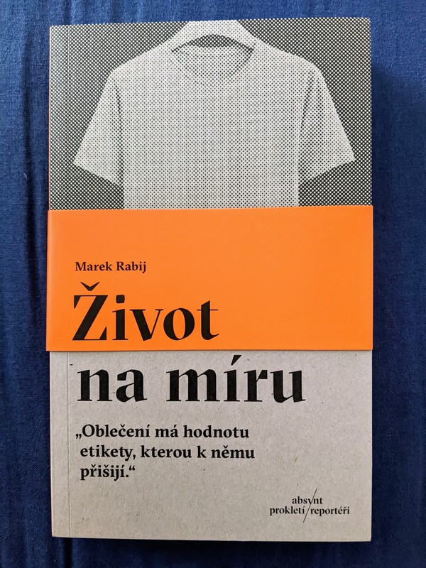

„Oblečení má hodnotu etikety, kterou k němu přišijí.“
Co najde průměrný Evropan, když otevře svou šatní skříň a podívá se na štítek každého jednoho kousku oblečení? S největší pravděpodobností cedulku Made in Bangladesh. Aniž bychom si to nějak výrazněji uvědomovali, většina z nás je součástí příběhu, který kniha Život na míru vypráví. Marek Rabij byl jedním z novinářů, kteří se po tragickém zhroucení bangladéšské továrny Rana Plaza (označovaném za nejtragičtější neštěstí v textilním průmyslu na světě) vydal na místo činu, aby ve své reportáži ukázal tragédii v celém kontextu oděvního byznysu. Hovořil s bývalými i současnými zaměstnanci textilních továren i s jejich nadřízenými. Výsledkem je 170 stran informacemi nabitého textu, který vás rozhodně donutí k zamyšlení.
Čtenář se dozvídá mnohé nejen o samotné události v Rana Plaza, ale i o děsivých pracovních podmínkách, které v textilních továrnách v Bangladéši běžně panují. Nekonečná pracovní doba, neplacené přesčasy, nulová bezpečnostní opatření, dětská práce – to je jen malá výseč tamní reality. Tragédie Rana Plaza se skloňuje dodnes, o čem se však vůbec nehovoří jsou požáry, které jsou v technicky špatně zabezpečených dílnách na denním pořádku a při nichž každým rokem zahyne spousta lidí. S několika přeživšími těchto událostí reportér rovněž přináší rozhovor, z něhož mrazí.

Hodně mě zaujala kapitola, v níž se Marek Rabij zaobírá problematikou „padělků“, které ale fakticky vůbec padělky nejsou, jedná se pouze o načerno obchodovanou nadprodukci oděvních továren. „Fejková“ Prada kabelka, kterou si přivezete z dovolené v Turecku, tak vůbec nemusí být fejkem. Po přečtení Života na míru si ale pravděpodobně odpustíte i takto „výhodný“ kauf…
Kniha vyznívá poněkud bezútěšně, protože z ní vyplývá, že problém nevyřešíme my jako spotřebitelé – je to o špatně nastavené politice země, neexistujícím sociálním zabezpečení, nedostupném školství či zdravotní péči, všudypřítomné korupci… Situace v bangladéšském oděvním průmyslu je pouhým odrazem bídy celé této země. Přesto jsem pořád přesvědčená, že je toho hodně, co udělat můžeme – minimálně nepodporovat nesmyslnou nadprodukci bezhlavým nakupováním oblečení, které nepotřebujeme, jen proto, že je ve výprodeji. Myslím, že v tomto má každý z nás tak trochu máslo na hlavě.
Za sebe musím tuto reportáž jen a jen doporučit - měl by si ji přečíst každý. Možná se tím ze dne na den nic nezmění, ale pokud nás západní konzumenty donutí k přehodnocení, koho svým příštím nákupem oblečení podpoříme, bude to jen dobře.